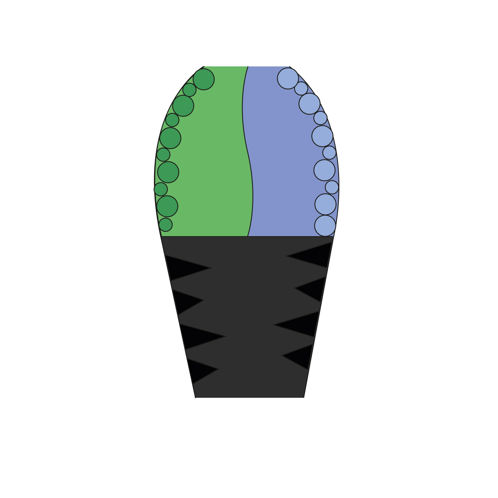
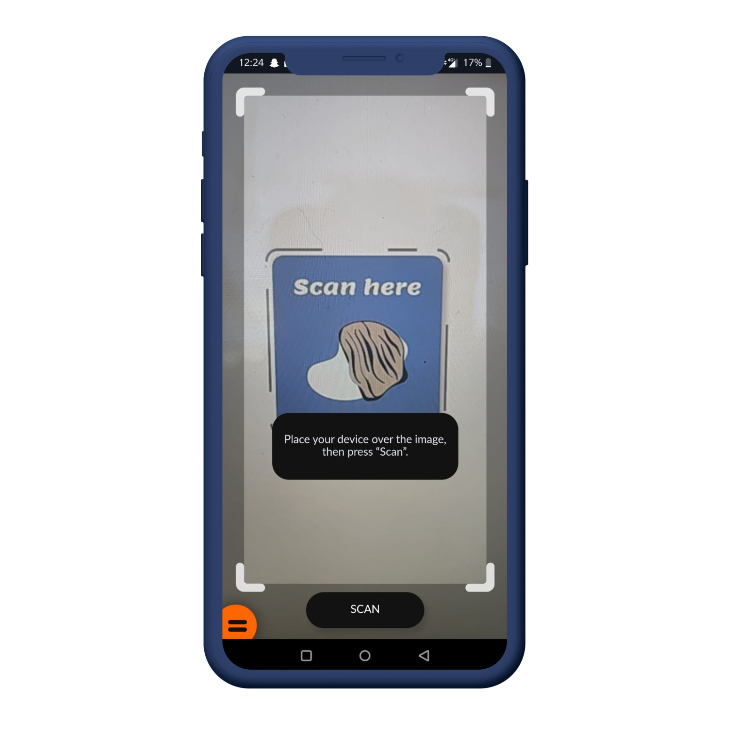

Hoe werkt de maquette?
In de video op de Interactie pagina wordt als het ware een tour gegeven door de ruimte alsof u echt in de ruimte bent. En proberen wij u zoveel mogelijk te laten zien van wat er te zien is. De ruimte bestaat uit 2 kanten, omdat Bart Hess ook 2 kanten van werk heeft; Zacht en Scherp.


Hoe werkt de AR-app?
Als u de QR-code scant op de interactie pagina wordt er een AR-app geopend. In de tour komen er indicators in beeld. (Zie de afbeelding hoe die er uitzien) Als u met uw telefoon richt op deze indicator, scant die de indicator en komt er een informatiebordje tevoorschijn met extra informatie over Bart Hess. Een leuk digitaal extraatje.